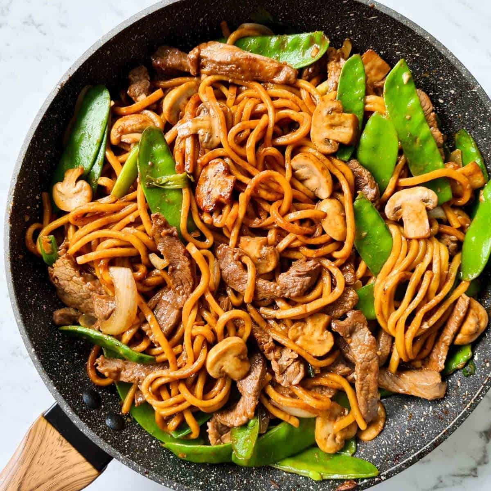

Beef Noodles

Description
The ideal hearty and flavour-packed quick and easy dinner! This beef noodle stir fry recipe takes just 10 minutes to cook, perfect to make on weeknights! The star of this dish, aside from the Hokkien noodles of course, is the velvety, tender beef strips.
Ingredients
- Hong Kong pan fried noodles
- Marinated beef
- Mixed sauce
- Baby bok choy, sliced
- Ginger
- Garlic
- Onion, sliced
- Carrot, sliced
Method
- Use a generous amount of oil to pan fry the noodles until crispy and move them to a serving plate.
- Sear the beef and move it to a plate.
- Saute the aromatics and veggies that take longer to cook
- Add the baby bak choy
- Pour in the sauce and cook until it thickens.
- Add back the beef and mix. Pour the sauce and beef over the crispy noodles.